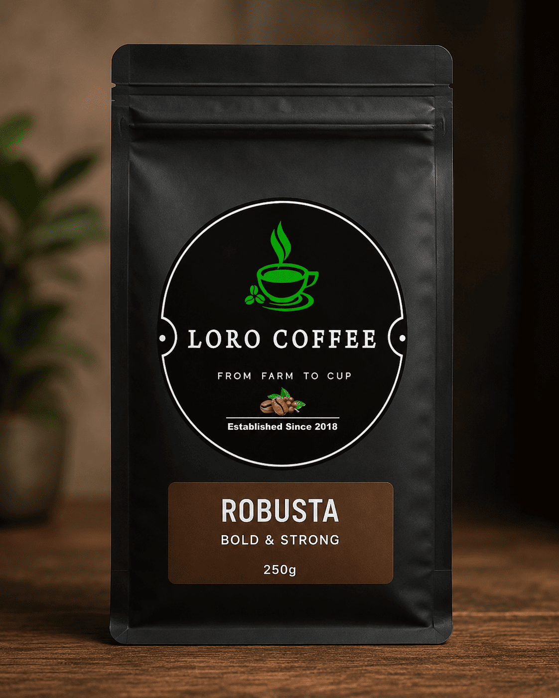
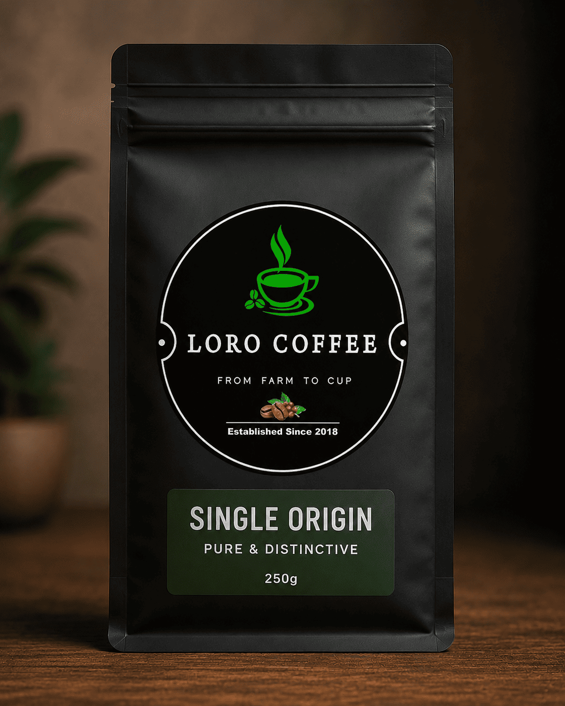
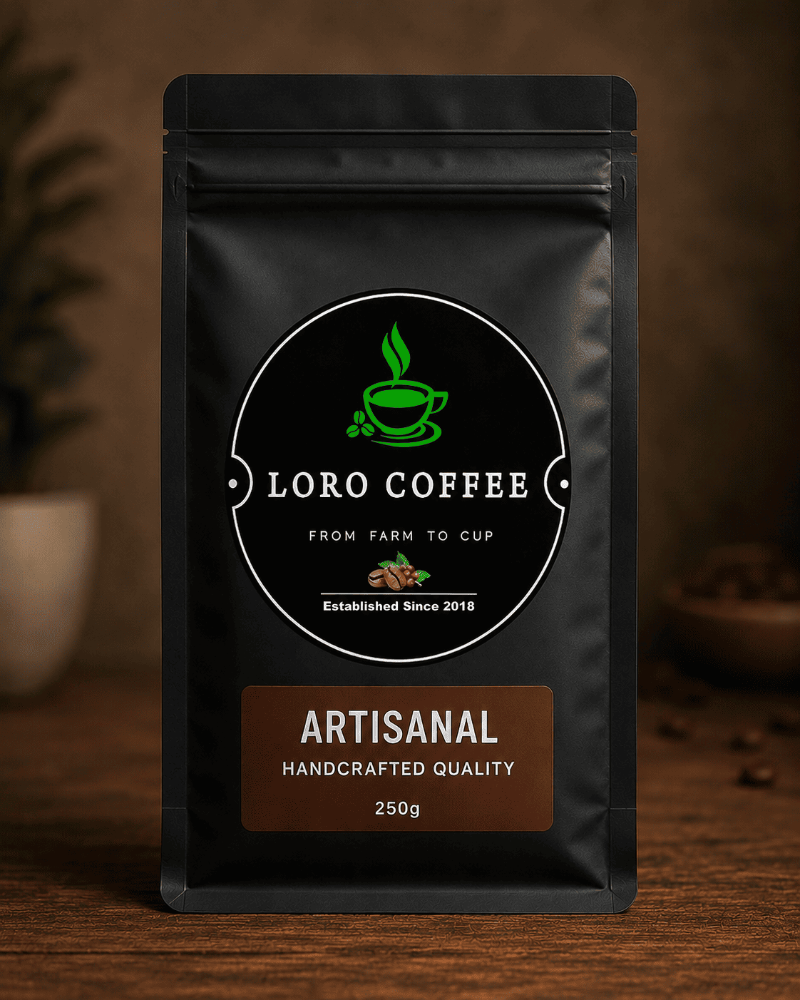
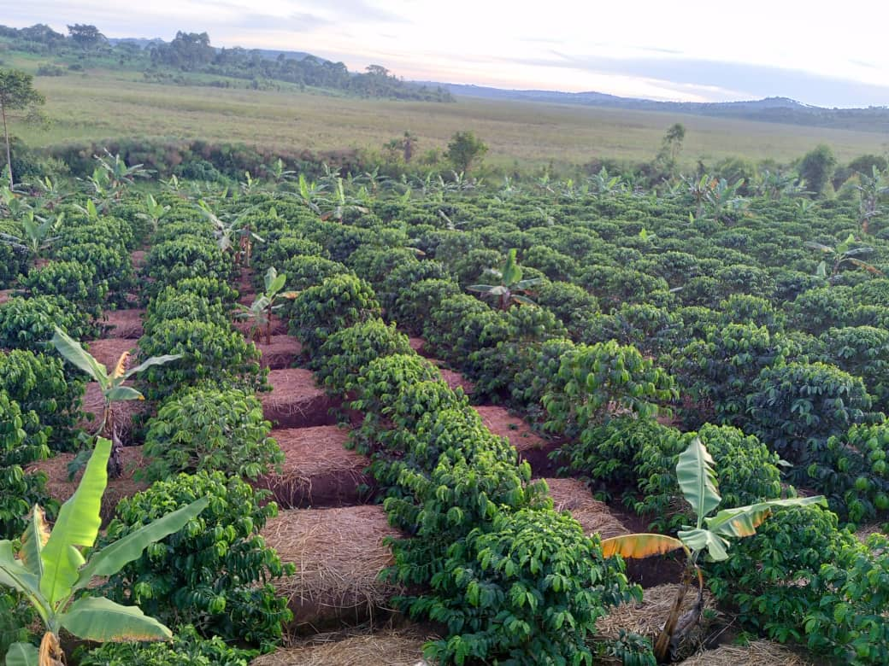
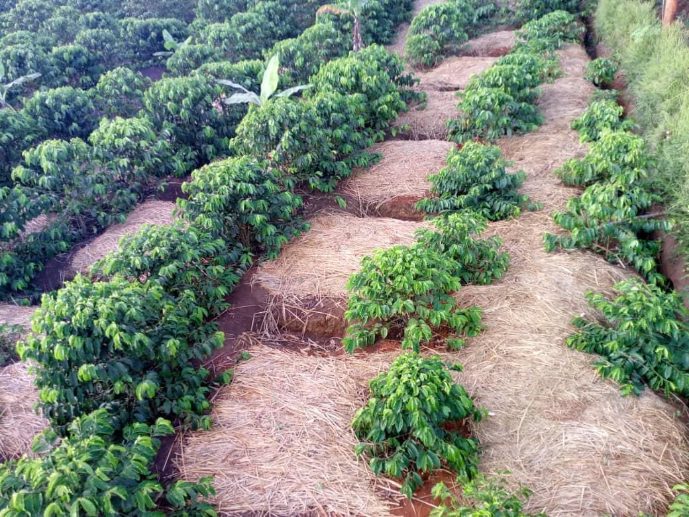
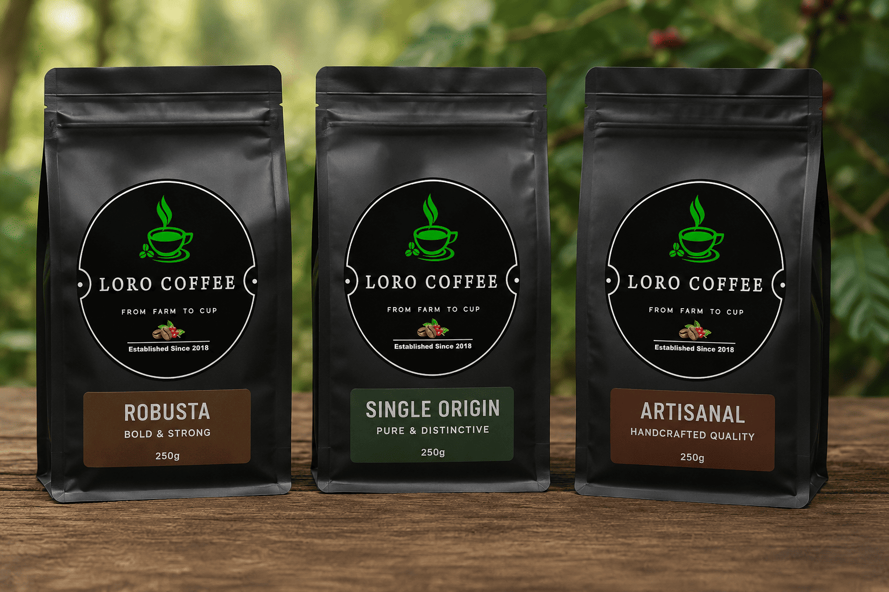
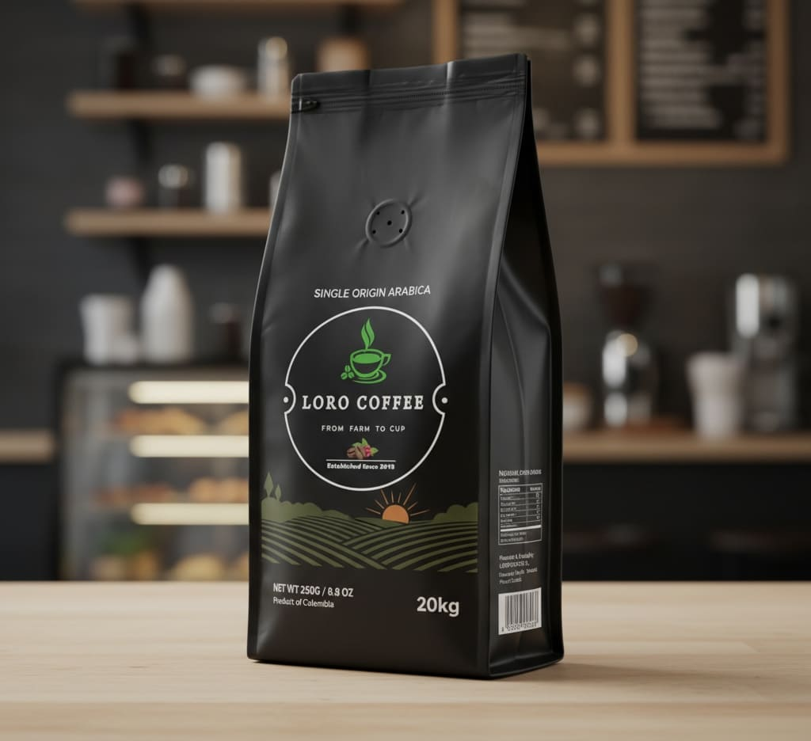

Available Now
Organic Robusta Coffee
Premium locally grown organic Robusta coffee cultivated using sustainable farming techniques — bold, rich, and full of character.
Enquire about wholesaleSingle-origin Robusta from the highlands of Loro — farmed with care, roasted with precision, delivered to the world.


Loro Coffee is a product of Loro Coffee Farms, specialising in growing organic Robusta coffee. Located in Loro Town Council, with farms in Loro Village and Wii Dam Apiny, Aber Sub County — established in 2018 and grown sustainably, protecting the natural environment around every farm.
To produce exceptional organic coffee while fostering economic development and social progress in rural communities.
To transform Loro into a renowned coffee hub, ensuring community benefits and regional growth.
Sustainable farming techniques that protect natural vegetation around our farms.
Supporting local farmers with training and resources, promoting ethical farming.
Creating jobs, improving infrastructure, and uplifting rural communities.

Premium locally grown organic Robusta coffee cultivated using sustainable farming techniques — bold, rich, and full of character.
Enquire about wholesale
Carefully crafted blends designed to showcase the distinctive flavors of Loro coffee — terroir-driven and fully traceable.
In development
Specially roasted coffee crafted to bring out rich aroma, smooth texture and bold taste — precision at every degree.
In development






Precision at every stage.

Harvest occurs annually when the coffee beans reach maturity and are collected for processing.

The beans are dried using wet or dry technique, depending on the flavor profile we want to achieve.

The coffee is roasted and acquires its flavor by precision processing the grain in dedicated ovens.
We source premium beans from our high-altitude farms known for exceptional soil and climate conditions. Every batch is selected based on traceability, sustainability and cup quality — no shortcuts, ever.

Only perfectly ripe cherries are hand-picked to ensure balanced sweetness and optimal sugar development for refined flavor profiles. Our farmers bring decades of knowledge to every harvest season.

Freshness is sealed using one-way degassing valves and airtight packaging to preserve aroma and flavor integrity — from our farm gates to your roastery, every bean arrives at its best.
Every bag of Loro Coffee supports sustainable livelihoods in Oyam District, Uganda. We invest in infrastructure, training, and environmental protection that outlasts every harvest — creating futures that last generations.
Partner With Us
Coffee is the best drink in the morning — it keeps you focused. Grown in high-altitude soil where patience meets nature, naturally sundried with precision crafted for perfection.
Loro Coffee supports international trade through professional export documentation, efficient logistics coordination and consistent supply chain management.
Contact our business development team for pricing, samples and export documentation.
Contact Trade Team